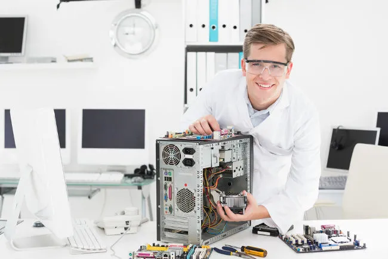

Informática é o termo usado para designar um grande conjunto de conhecimentos relativos ao armazenamento, processamento, coleta e transmissão de informação digital. A palavra informática, no entanto, deriva do termo alemão “informatika”, criado em 1956 pelo cientista da computação Karl Steinbuch. O sentido dessa expressão remete à ideia de processamento da informação. Alguns profissionais da área atribuem a origem da palavra “informática” à junção de duas palavras: informação e automática, já que a informática é uma ciência responsável pelo processamento automático de informação.
Significado de informática
Informática é um termo usado para descrever o estudo e o desenvolvimento das tecnologias de informação em prol das pessoas, organizações e sociedades. A informática é um campo do conhecimento que leva em conta as relações existentes entre as pessoas e a informação por meio da construção de interfaces, novas tecnologias e sistemas direcionados para a solução ou para a automatização de problemas. Atualmente, os conhecimentos de informática são cada vez mais necessários para que os indivíduos tornem-se tecnologicamente autônomos, uma vez que é crescente a adoção de interfaces e sistemas completamente informatizados. Os principais objetivos da informatização e da automatização, nesses casos, assim como acontece com os caixas eletrônicos, é a agilização dos serviços e a redução de ocorrências de falhas humanas. A informatização de eletrodomésticos e, até mesmo, de residências está cada vez mais presente em nossa sociedade. Essas mudanças são cada vez mais cotidianas e, por isso, é necessário que os nossos conhecimentos de informática sejam constantemente atualizados.
Informática básica
Informática básica é o conjunto de conhecimentos e habilidades mínimas para que um indivíduo seja parte do processo de inclusão digital. Entre os conhecimentos da informática básica, podemos destacar o conhecimento das peças fundamentais dos computadores (hardware), funcionamento de cabos, fios e conexões diversos, navegação em páginas da internet, utilização de softwares de edição de texto, tabelas, gráficos, cálculos, edição de vídeo e imagem, etc.
"As peças dos computadores são chamadas de hardware. Entender o funcionamento dessas peças aumenta a nossa capacidade de entender como um computador funciona.
Veja também:A evolução dos computadores
Informática na educação
A informática na educação diz respeito ao uso de computadores e de outras tecnologias, como tablets e celulares, para fins pedagógicos. O objetivo central da informática educativa é utilizar recursos inerentes à tecnologia da informação como ferramentas capazes de promover melhorias no processo de ensino-aprendizagem. Além disso, a informática educativa visa a facilitar a socialização e a inclusão digital e, até mesmo, informatizar a frequência de alunos, diários de notas, publicação de calendários escolares, comunicação com pais e alunos, etc.
As tecnologias da informação e da comunicação são, atualmente, indispensáveis nos processos de ensino-aprendizagem.
Uma das vertentes mais comuns da informática no âmbito educacional é conhecida como TICs: tecnologias da informação e da comunicação. Sua finalidade engloba todos os meios técnicos necessários para o tratamento da informação e o estabelecimento de canais de comunicação, incluindo o uso de computadores, redes, internet, dispositivos móveis de telecomunicação e ampla gama de softwares necessários para tais fins.
Veja também:Conheça a evolução doscomputadores
O número de cursos a distância cresce diariamente. Essa modalidade de ensino, conhecida como e-learning ou ensino a distância, utiliza a rede mundial de computadores para conectar professores, tutores e alunos por meio de ambientes virtuais de aprendizagem, comumente chamados de AVAs (ambientes virtuais de aprendizagem).
Veja também:Conheça a história da internet
O Moodle ® (Modular Object-Oriented Dynamic Learning Environment), por exemplo, é uma ferramenta 100% gratuita, utilizada globalmente por diversas instituições e professores como ferramenta auxiliar e complementar à modalidade presencial. Por meio desse software, é possível criar turmas, publicar textos, notícias, enviar documentos, recolher atividades, elaborar questionários, promover discussões e fóruns, entre outros recursos.
Veja também:Aprenda mais sobre o que é ensino a distância.
Apesar de não substituírem a modalidade presencial de ensino, as TICs são uma forma bastante viável de facilitar o acesso à educação formal de comunidades carentes, que estejam muito distantes ou isoladas dos centros urbanos. Para tanto, é necessário o pleno funcionamento e manutenção periódica da infraestrutura de computadores, cabos, antenas, além da presença de pessoal qualificado para tal.
Além disso, a modalidade de ensino a distância é fundamentalmente diferente do ensino presencial. Portanto, os professores interessados nessa modalidade devem manter-se atualizados por meio de cursos preparatórios, cursos de pós-graduação, mestrados e aperfeiçoamentos voltados para as áreas das TICs.
Veja também:Como funciona a transmissão de dados?
Curiosidades sobre a informática
-
O buscador Google estima que o volume de dados da internet, nos dias de hoje, seja de aproximadamente cinco milhões de Terabytes.
-
Estima-se que aproximadamente 250 bilhões de e-mails sejam enviados diariamente. Desses e-mails, quase 80% são spam (publicidade em massa não solicitada).
-
A primeira webcam do mundo foi utilizada para monitorar uma jarra de café na Universidade de Cambridge, na Inglaterra.
-
A rede mundial de computadores (www ou world wide web) foi criada em 1989 pelo físico Tim Berners Lee no CERN (Centro Europeu de Reações Nucleares), dando origem às primeiras páginas da internet.
-
O navegador de internet Firefox recebeu esse nome em homenagem ao panda-vermelho do Himalaia.
-
Em 2018, há pelo menos 4,57 bilhões de aparelhos celulares ativos no mundo. Estima-se que, até 2020, o número chegue a 4,78 bilhões de pessoas.
-
O mercado da tecnologia da informação arrecadou, mundialmente, cerca de 3,5 trilhões de dólares no ano de 2017.
-
O primeiro mouse foi inventado em 1963 por Douglas Engelbart.
-
O buscador Google estima que cerca de 1 bilhão de pesquisas são feitas diariamente em seus domínios, gerando cerca de 200 toneladas de dióxido de carbono (CO2) por dia.
-
Claude Shannon, matemático e engenheiro norte-americano, é considerado o pai da teoria da informação. Em 1948, com apenas 21 anos, Shannon lançou as bases da lógica computacional, usada para programação de computadores e de todos os dispositivos eletrônicos atuais.
-
Até 1994, existiam cerca de 600 sites em toda a internet.
-
Na Finlândia, a internet é considerada um direito do cidadão e é, portanto, distribuída gratuitamente.
-
Os processadores usados nos chips mais modernos de celulares são constituídos por bilhões de transistores de aproximadamente 10 nanômetros (0,00000001 m) cada.